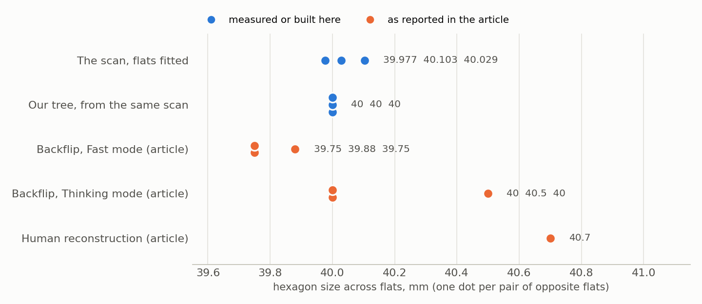
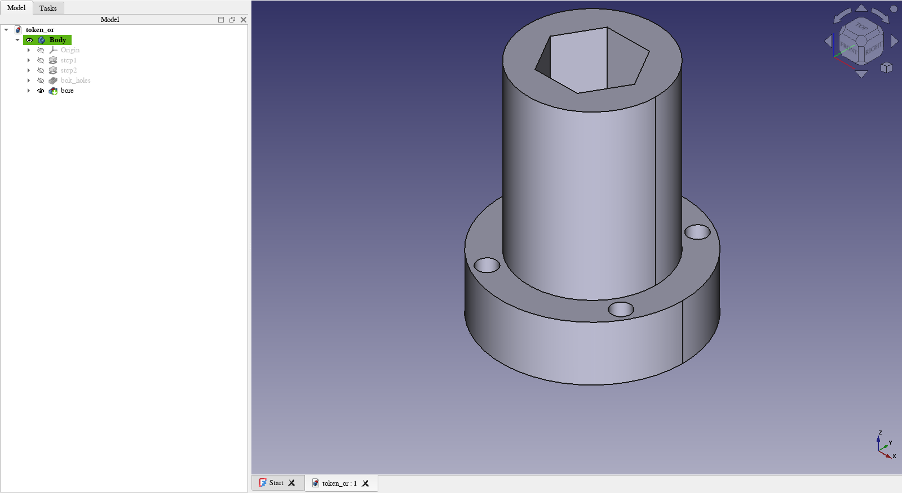

Mario Martinez published a test of Backflip AI's scan-to-CAD on 5 October. The part is a flanged bushing with a hexagonal bore, chosen because it is simple: the hexagon needs a sketch and an extrusion. The article reports that Backflip returned an editable model in both of its modes, but that the hexagon's flats did not come out equal, and it makes the point that a hexagon drawn as six editable lines is parametric without being correct.
The article shares the scan, so we ran it through our own tools. We have not run Backflip. Every Backflip number below is the article's.
What the scan says
The mesh is about 700,000 triangles, 100 mm across and 120 mm tall. We slice it across its axis and fit a straight line to the middle of each side of the bore. At mid-height the three pairs of opposite flats are 39.98, 40.10 and 40.03 mm apart. Over eight heights they stay between 39.96 and 40.21 mm, and the sides turn within half a degree of 60°. The corners are slightly soft: 45.7 mm across, where sharp corners would give 46.2.

So the scan itself is not a perfect hexagon. Its flats differ by 0.13 mm at that height and by a little over 0.2 mm at others. Any tool that copies what it measures will produce three different numbers. The article reports about 39.75, 39.88 and 39.75 mm from Backflip's Fast mode and about 40, 40.5 and 40 mm from its Thinking mode.
Regular is a decision
A regular hexagon cannot be measured out of a scan. Someone has to decide that the designer meant one, and then describe it with a single size. Our tool makes that decision with a stated rule: if the flat pairs agree within 0.3 mm and the sides are within 1° of evenly turned, the hole is a regular polygon. It then writes one feature with one number, the mean across flats, rounded to the nearest half millimetre when the scan is within 0.3 mm of it. Here that is a hexagon 40.0 mm across flats. If the rule fails, the tool says the hole is not regular and leaves it out; it does not emit six lines.
The same idea covers the rest of the part. Four holes at one radius and 90° apart become one bolt circle with one diameter. One of the four scanned badly, as an irregular 7.8 mm hole; it takes the pattern's 10 mm, and the output says so.

The tree
| Feature | Scan | Tree |
|---|---|---|
| Flange, diameter × height | 99.67 × 30.0 | 99.5 × 30 |
| Boss, diameter × height | 69.76 × 90 | 70 × 90 |
| Hexagonal bore, across flats | 39.98, 40.10, 40.03 | 40, through |
| Bolt holes | three near 9.9, one 7.8; on an 84.9 circle | 4 × 10 on an 85 circle |
That is eight features: two sketches and pads, and two sketches and through pockets. Rebuilt and sliced the same way, the tree overlaps the scan by 97.8% of their combined volume, and its volume is 0.18% under. The run takes about 20 seconds. FreeCAD builds the same tree natively, to the same volume as our reference build.
The missing 2% is mostly the scan. Its boss sits about 0.35 mm off the flange's axis, and the insides of the bolt holes are poorly captured. The tree assumes one straight axis.
What this does not show
- It is one part, and the easiest kind for this tool. It only handles round steps stacked along the mesh's Z axis with through holes. Backflip takes arbitrary scans. This is a comparison on one point, the hexagon, and not of the two tools.
- The flange diameter shows the weakness of rounding. The scan reads 99.67 mm, the tool wrote 99.5, and a person would probably type 100.
- In our IR the hexagon is one feature with one size. In the FreeCAD sketch it is still six lines with exact coordinates and no constraints, so dragging one in FreeCAD would break it. The article's remark about six editable lines applies to that file too.
- The article gives a human reconstruction of 40.70 mm, a regular hexagon 47 mm across corners. Our line fits on the shared mesh give 40.0 to 40.2 mm. We do not know the reason for the difference. It may be a different measuring convention or an allowance we have not applied.
- We looked for chamfers. The rims lose about a quarter of a millimetre at the very edge, which is scan softness, so the tree has none.
From a picture
We also tried the harder input: a single screenshot of the scan, with no mesh. A vision model proposes the tree, the tool rebuilds it and fits its outline to the picture. The hexagon comes out regular because the model is asked for a polygon feature, but its size is an estimate: 41.3 mm across flats against the scan's 40, with the overall size taken from the mesh. The result is marked rough, and the mesh is what showed by how much.
What's next
Constraints in the emitted sketches, so a regular polygon stays regular when edited in CAD. A better rule than rounding for nominal sizes. Parts that are not round steps, which is where the existing STEP recognisers would have to take over from slicing.
Who did what
We picked the test and asked whether the hexagon and the chamfers were right. Claude wrote the tools and ran the measurements. The test part and the Backflip results are Mario Martinez's.
The code is mesh_compare.py and image_recognize.py in punkfab/featuretree. Both are prototypes. Got a scan that should come back as an editable tree? Start a project →